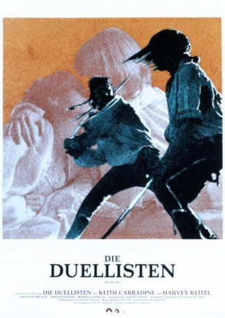

#4834 Die Duellisten
Alternativ: The Duellists
 
 IMDB-Wertung: 7.5 / 10
IMDB-Wertung: 7.5 / 10  Metascore: 0
Metascore: 0 
D'Hubert und Feraud sind Offiziere der Husaren der napoleonischen Armee. Feraud verwundet in einem Duell den Neffen des Bürgermeisters von Strasburg und wird dafür von seinem Vorgesetzten unter Hausarrest gestellt. D'Hubert überbringt ihm die Nachricht darüber, was Feraud als Beleidigung auffasst und ihn zu einem Duell auffordert.
Jahr: 1977
Dauer: 100 Minuten
FSK: 12
Land: England Studio: CIC VideoTonspuren: DTS - ,
Untertitel: Englisch,
Auflösung: 1080p (1920x1080) Größe: 11366 MB
Genre: Drama, Krieg
Regisseur:  Ridley Scott
Ridley Scott
Drehbuch: Maneesh Sharma
Soundtrack:
Darsteller:
Datei: X:\1977\Duellisten, Die (1977, FSK12, 1920x1080).mkv seit 23.11.2016
Festplatte: HD 1971-1979
 Es gibt insgesamt 33 Filme in der Gruppe '1977'
Es gibt insgesamt 33 Filme in der Gruppe '1977'